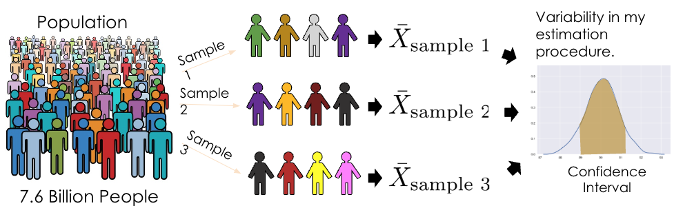
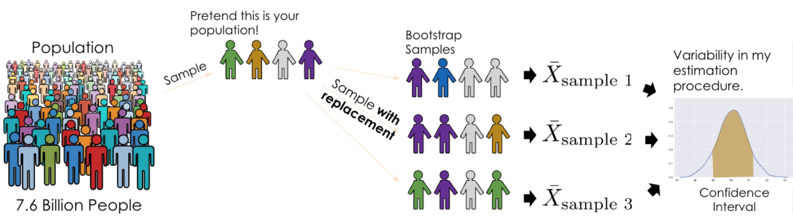
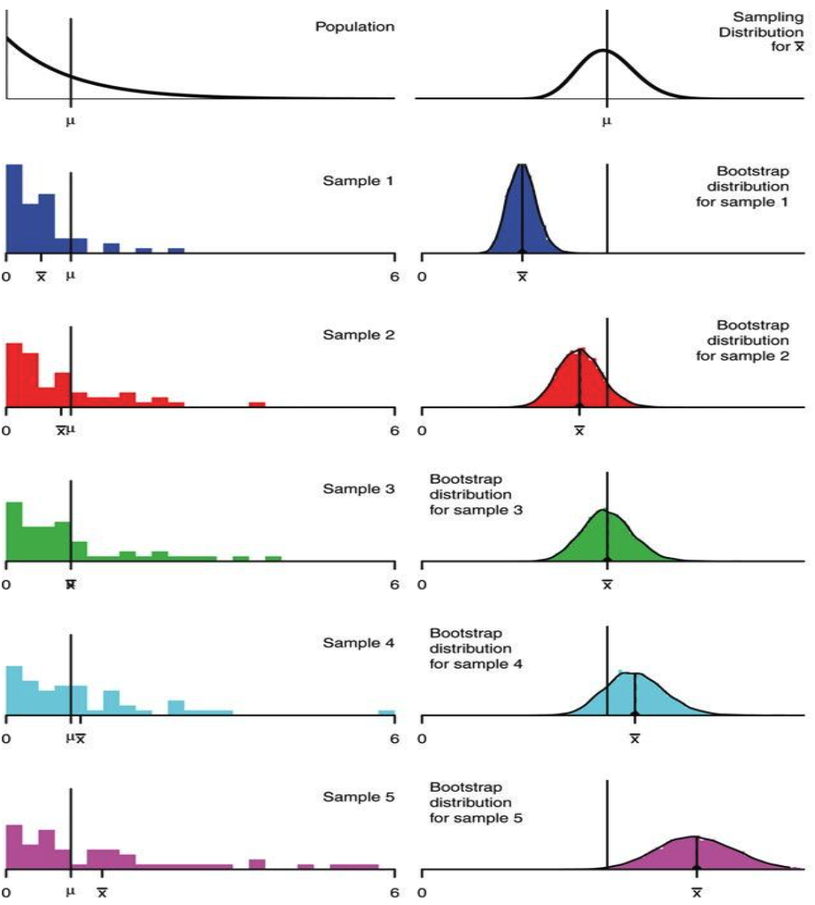
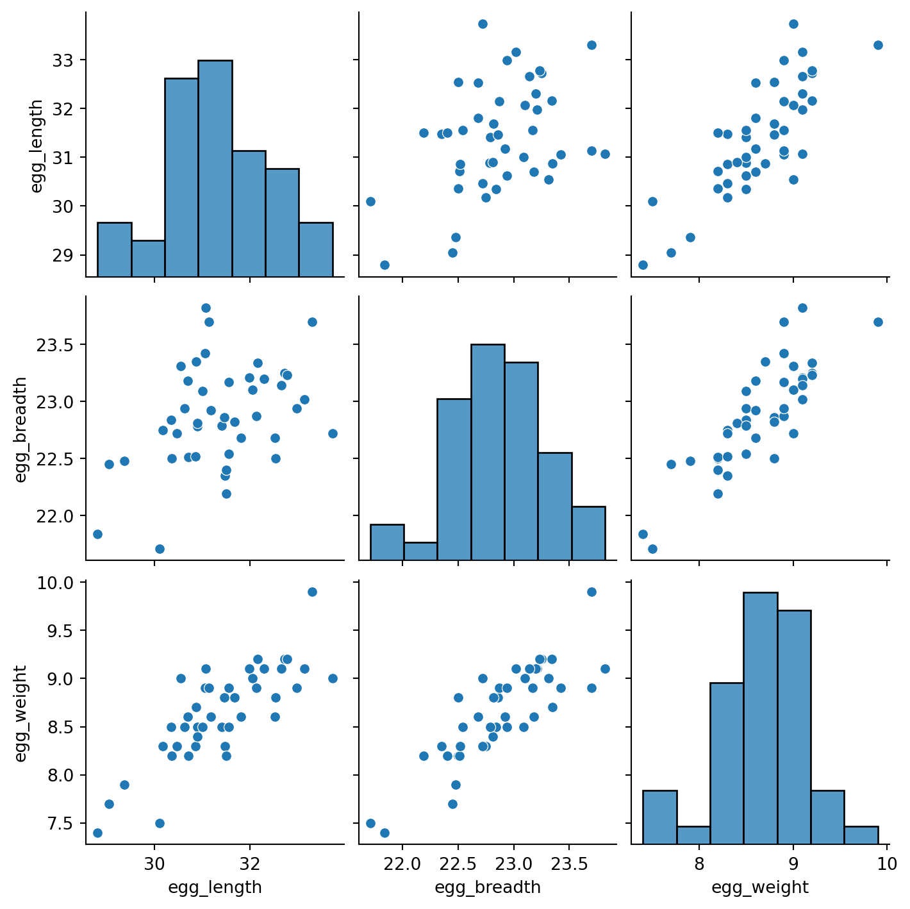
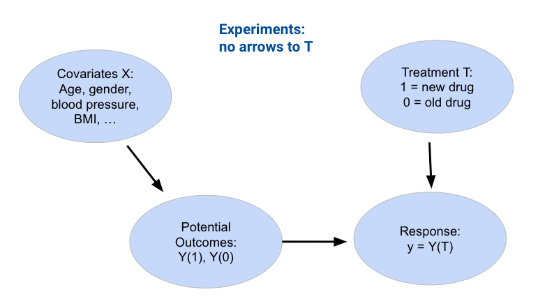

Code
import pandas as pd
eggs = pd.read_csv("data/snowy_plover.csv")
eggs.head(5)| egg_weight | egg_length | egg_breadth | bird_weight | |
|---|---|---|---|---|
| 0 | 7.4 | 28.80 | 21.84 | 5.2 |
| 1 | 7.7 | 29.04 | 22.45 | 5.4 |
| 2 | 7.9 | 29.36 | 22.48 | 5.6 |
| 3 | 7.5 | 30.10 | 21.71 | 5.3 |
| 4 | 8.3 | 30.17 | 22.75 | 5.9 |
Last time, we introduced the idea of random variables and how they affect the data and model we construct. We also demonstrated the decomposition of model risk from a fitted model and dived into the bias-variance tradeoff.
In this lecture, we will explore regression inference via hypothesis testing, understand how to use bootstrapping under the right assumptions, and consider the environment of understanding causality in theory and in practice.
There are two main reasons why do we build models:
Recall the framework we established in the last lecture. The true underlying relationship between the data points is given by \(Y = g(x) + \epsilon\), where \(g(x)\) is the true underlying relationship, and \(\epsilon\) represents randomness. If we assume \(g(x)\) is linear, we can express this relationship in terms of the unknown, true model parameters \(\theta\).
\[f_{\theta}(x) = g(x) + \epsilon = \theta_0 + \theta_1 x_1 + \ldots + \theta_p x_p + \epsilon\]
Our model attempts to estimate each true population parameter \(\theta_i\) using the sample estimates \(\hat{\theta}_i\) calculated from the design matrix \(\Bbb{X}\) and response vector \(\Bbb{Y}\).
\[f_{\hat{\theta}}(x) = \hat{\theta}_0 + \hat{\theta}_1 x_1 + \ldots + \hat{\theta}_p x_p\]
Let’s pause for a moment. At this point, we’re very used to working with the idea of a model parameter. But what exactly does each coefficient \(\theta_i\) actually mean? We can think of each \(\theta_i\) as a slope of the linear model – if all other variables are held constant, a unit change in \(x_i\) will result in a \(\theta_i\) change in \(f_{\theta}(x)\). Broadly speaking, a large value of \(\theta_i\) means that the feature \(x_i\) has a large effect on the response; conversely, a small value of \(\theta_i\) means that \(x_i\) has little effect on the response. In the extreme case, if the true parameter \(\theta_i\) is 0, then the feature \(x_i\) has no effect on \(Y(x)\).
If the true parameter \(\theta_i\) for a particular feature is 0, this tells us something pretty significant about the world: there is no underlying relationship between \(x_i\) and \(Y(x)\)! How then, can we test if a parameter is actually 0? As a baseline, we go through our usual process of drawing a sample, using this data to fit a model, and computing an estimate \(\hat{\theta}_i\). However, we need to also consider the fact that if our random sample had come out differently, we may have found a different result for \(\hat{\theta}_i\). To infer if the true parameter \(\theta_i\) is 0, we want to draw our conclusion from the distribution of \(\hat{\theta}_i\) estimates we could have drawn across all other random samples. This is where hypothesis testing comes in handy!
To test if the true parameter \(\theta_i\) is 0, we construct a hypothesis test where our null hypothesis states that the true parameter \(\theta_i\) is 0, and the alternative hypothesis states that the true parameter \(\theta_i\) is not 0. If our p-value is smaller than our cutoff value (usually p=0.05), we reject the null hypothesis.
To determine properties of the sampling distribution of an estimator like variance, we’d need to have access to the population so that we can consider all possible samples and compute an estimate for each sample.

However, we don’t have access to the population; we only have one random sample from the population. How can we consider all possible samples if we only have one?
The idea of bootstrapping is to treat our random sample as a "population" and resample from it with replacement. Intuitively, a random sample resembles the population, so a random resample also resembles a random sample of the population.

Bootstrap resampling is a technique for estimating the sampling distribution of an estimator. To execute it, we can follow the pseudocode below:
collect a random sample of size n (called the bootstrap population)
initiate list of estimates
repeat 10,000 times:
resample with replacement from bootstrap population
apply estimator f to the resample
store in list
list of estimates is the bootstrapped sampling distribution of fHow well does bootstrapping actually represent our population? The bootstrapped sampling distribution of an estimator does not exactly match the sampling distribution of that estimator, but it is often close. Similarly, the variance of the bootstrapped distribution is often close to the true variance of the estimator. The example below displays the results of different bootstraps from a known population using a sample size of \(n=50\).

In the real world, we don’t know the population distribution. The center of the boostrapped distribution is the estimator applied to our original sample, so we have no way of recovering the estimator’s true expected value; the center and spread of our bootstrap are approximations. The quality of our bootstrapped distribution also depends on the quality of our original sample; if our original sample was not representative of the population (like Sample 5 in the image above), then the bootstrap is next to useless. In general, bootstrapping works better for large samples, when the population distribution is not heavily skewed (no outliers), and when the estimator is “low variance” (insensitive to extreme values).
TODO
An equivalent way to execute the hypothesis test described earlier is through bootstrapping (this equivalence can be proven through the duality argument, which is out of scope for this class). We use bootstrapping to compute approximate 95% confidence intervals for each \(\theta_i\). If the interval doesn’t contain 0, we reject the null hypothesis at the p=5% level. Otherwise, the data is consistent with the null, as the true parameter could possibly be 0.
To show an example of this hypothesis testing process, we’ll work with the snowy plover dataset throughout this section. The data are about the eggs and newly-hatched chicks of the Snowy Plover. The data were collected at the Point Reyes National Seashore by a former student at Berkeley. Here’s a parent bird and some eggs.
Note that Egg Length and Egg Breadth (widest diameter) are measured in millimeters, and Egg Weight and Bird Weight are measured in grams; for comparison, a standard paper clip weighs about one gram.
import pandas as pd
eggs = pd.read_csv("data/snowy_plover.csv")
eggs.head(5)| egg_weight | egg_length | egg_breadth | bird_weight | |
|---|---|---|---|---|
| 0 | 7.4 | 28.80 | 21.84 | 5.2 |
| 1 | 7.7 | 29.04 | 22.45 | 5.4 |
| 2 | 7.9 | 29.36 | 22.48 | 5.6 |
| 3 | 7.5 | 30.10 | 21.71 | 5.3 |
| 4 | 8.3 | 30.17 | 22.75 | 5.9 |
Our goal will be to predict the weight of a newborn plover chick, which we assume follows the true relationship \(Y = f_{\theta}(x)\) below.
\[\text{bird\_weight} = \theta_0 + \theta_1 \text{egg\_weight} + \theta_2 \text{egg\_length} + \theta_3 \text{egg\_breadth} + \epsilon\]
Say we wish to determine if the egg_weight impacts the bird_weight of a chick – we want to infer if \(\theta_1\) is equal to 0.
First, we define our hypotheses:
Next, we use our data to fit a model \(\hat{Y} = f_{\hat{\theta}}(x)\) that approximates the relationship above. This gives us the observed value of \(\hat{\theta}_1\) found from our data.
from sklearn.linear_model import LinearRegression
import numpy as np
X = eggs[["egg_weight", "egg_length", "egg_breadth"]]
Y = eggs["bird_weight"]
model = LinearRegression()
model.fit(X, Y)
# This gives an array containing the fitted model parameter estimates
thetas = model.coef_
# Put the parameter estimates in a nice table for viewing
display(pd.DataFrame(
[model.intercept_] + list(model.coef_),
columns=['theta_hat'],
index=['intercept', 'egg_weight', 'egg_length', 'egg_breadth']
))
print("RMSE", np.mean((Y - model.predict(X)) ** 2))| theta_hat | |
|---|---|
| intercept | -4.605670 |
| egg_weight | 0.431229 |
| egg_length | 0.066570 |
| egg_breadth | 0.215914 |
RMSE 0.04547085380275766Our single sample of data gives us the value of \(\hat{\theta}_1=0.431\). To get a sense of how this estimate might vary if we were to draw different random samples, we will use bootstrapping. To construct a bootstrap sample, we will draw a resample from the collected data that:
We draw a bootstrap sample, use this sample to fit a model, and record the result for \(\hat{\theta}_1\) on this bootstrapped sample. We then repeat this process many times to generate a bootstrapped empirical distribution of \(\hat{\theta}_1\). This gives us an estimate of what the true distribution of \(\hat{\theta}_1\) across all possible samples might look like.
# Set a random seed so you generate the same random sample as staff
# In the "real world", we wouldn't do this
import numpy as np
np.random.seed(1337)
# Set the sample size of each bootstrap sample
n = len(eggs)
# Create a list to store all the bootstrapped estimates
estimates = []
# Generate a bootstrap resample from `eggs` and find an estimate for theta_1 using this sample.
# Repeat 10000 times.
for i in range(10000):
# draw a bootstrap sample
bootstrap_resample = eggs.sample(n, replace=True)
X_bootstrap = bootstrap_resample[["egg_weight", "egg_length", "egg_breadth"]]
Y_bootstrap = bootstrap_resample["bird_weight"]
# use bootstrapped sample to fit a model
bootstrap_model = LinearRegression()
bootstrap_model.fit(X_bootstrap, Y_bootstrap)
bootstrap_thetas = bootstrap_model.coef_
# record the result for theta_1
estimates.append(bootstrap_thetas[0])
# calculate the 95% confidence interval
lower = np.percentile(estimates, 2.5, axis=0)
upper = np.percentile(estimates, 97.5, axis=0)
conf_interval = (lower, upper)
conf_interval(-0.258648119568487, 1.103424385420405)Our bootstrapped 95% confidence interval for \(\theta_1\) is \([-0.259, 1.103]\). Immediately, we can see that 0 is indeed contained in this interval – this means that we cannot conclude that \(\theta_1\) is non-zero! More formally, we fail to reject the null hypothesis (that \(\theta_1\) is 0) under a 5% p-value cutoff.
We can repeat this process to construct 95% confidence intervals for the other parameters of the model.
np.random.seed(1337)
theta_0_estimates = []
theta_1_estimates = []
theta_2_estimates = []
theta_3_estimates = []
for i in range(10000):
bootstrap_resample = eggs.sample(n, replace=True)
X_bootstrap = bootstrap_resample[["egg_weight", "egg_length", "egg_breadth"]]
Y_bootstrap = bootstrap_resample["bird_weight"]
bootstrap_model = LinearRegression()
bootstrap_model.fit(X_bootstrap, Y_bootstrap)
bootstrap_theta_0 = bootstrap_model.intercept_
bootstrap_theta_1, bootstrap_theta_2, bootstrap_theta_3 = bootstrap_model.coef_
theta_0_estimates.append(bootstrap_theta_0)
theta_1_estimates.append(bootstrap_theta_1)
theta_2_estimates.append(bootstrap_theta_2)
theta_3_estimates.append(bootstrap_theta_3)
theta_0_lower, theta_0_upper = np.percentile(theta_0_estimates, 2.5), np.percentile(theta_0_estimates, 97.5)
theta_1_lower, theta_1_upper = np.percentile(theta_1_estimates, 2.5), np.percentile(theta_1_estimates, 97.5)
theta_2_lower, theta_2_upper = np.percentile(theta_2_estimates, 2.5), np.percentile(theta_2_estimates, 97.5)
theta_3_lower, theta_3_upper = np.percentile(theta_3_estimates, 2.5), np.percentile(theta_3_estimates, 97.5)
# Make a nice table to view results
pd.DataFrame({"lower":[theta_0_lower, theta_1_lower, theta_2_lower, theta_3_lower], "upper":[theta_0_upper, \
theta_1_upper, theta_2_upper, theta_3_upper]}, index=["theta_0", "theta_1", "theta_2", "theta_3"])| lower | upper | |
|---|---|---|
| theta_0 | -15.278542 | 5.161473 |
| theta_1 | -0.258648 | 1.103424 |
| theta_2 | -0.099138 | 0.208557 |
| theta_3 | -0.257141 | 0.758155 |
Something’s off here. Notice that 0 is included in the 95% confidence interval for every parameter of the model. Using the interpretation we outlined above, this would suggest that we can’t say for certain that any of the input variables impact the response variable! This makes it seem like our model can’t make any predictions – and yet, each model we fit in our bootstrap experiment above could very much make predictions of \(Y\).
How can we explain this result? Think back to how we first interpreted the parameters of a linear model. We treated each \(\theta_i\) as a slope, where a unit increase in \(x_i\) leads to a \(\theta_i\) increase in \(Y\), if all other variables are held constant. It turns out that this last assumption is very important. If variables in our model are somehow related to one another, then it might not be possible to have a change in one of them while holding the others constant. This means that our interpretation framework is no longer valid! In the models we fit above, we incorporated egg_length, egg_breadth, and egg_weight as input variables. These variables are very likely related to one another – an egg with large egg_length and egg_breadth will likely be heavy in egg_weight. This means that the model parameters cannot be meaningfully interpreted as slopes.
To support this conclusion, we can visualize the relationships between our feature variables. Notice the strong positive association between the features.
import seaborn as sns
sns.pairplot(eggs[["egg_length", "egg_breadth", "egg_weight", 'bird_weight']]);
This issue is known as collinearity, sometimes also called multicollinearity. Collinearity occurs when one feature can be predicted fairly accurately by a linear combination of the other features, which happens when one feature is highly correlated with the others.
Why is collinearity a problem? Its consequences span several aspects of the modeling process:
The take-home point is that we need to be careful with what features we select for modeling. If two features likely encode similar information, it is often a good idea to choose only one of them as an input variable.
Let us now consider a more interpretable model: we instead assume a true relationship using only egg weight:
\[f_\theta(x) = \theta_0 + \theta_1 \text{egg\_weight} + \epsilon\]
from sklearn.linear_model import LinearRegression
X_int = eggs[["egg_weight"]]
Y_int = eggs["bird_weight"]
model_int = LinearRegression()
model_int.fit(X_int, Y_int)
# This gives an array containing the fitted model parameter estimates
thetas_int = model_int.coef_
# Put the parameter estimates in a nice table for viewing
pd.DataFrame({"theta_hat":[model_int.intercept_, thetas_int[0]]}, index=["theta_0", "theta_1"])| theta_hat | |
|---|---|
| theta_0 | -0.058272 |
| theta_1 | 0.718515 |
import matplotlib.pyplot as plt
# Set a random seed so you generate the same random sample as staff
# In the "real world", we wouldn't do this
np.random.seed(1337)
# Set the sample size of each bootstrap sample
n = len(eggs)
# Create a list to store all the bootstrapped estimates
estimates_int = []
# Generate a bootstrap resample from `eggs` and find an estimate for theta_1 using this sample.
# Repeat 10000 times.
for i in range(10000):
bootstrap_resample_int = eggs.sample(n, replace=True)
X_bootstrap_int = bootstrap_resample_int[["egg_weight"]]
Y_bootstrap_int = bootstrap_resample_int["bird_weight"]
bootstrap_model_int = LinearRegression()
bootstrap_model_int.fit(X_bootstrap_int, Y_bootstrap_int)
bootstrap_thetas_int = bootstrap_model_int.coef_
estimates_int.append(bootstrap_thetas_int[0])
plt.figure(dpi=120)
sns.histplot(estimates_int, stat="density")
plt.xlabel(r"$\hat{\theta}_1$")
plt.title(r"Bootstrapped estimates $\hat{\theta}_1$ Under the Interpretable Model");
Notice how the interpretable model performs almost as well as our other model:
from sklearn.metrics import mean_squared_error
rmse = mean_squared_error(Y, model.predict(X))
rmse_int = mean_squared_error(Y_int, model_int.predict(X_int))
print(f'RMSE of Original Model: {rmse}')
print(f'RMSE of Interpretable Model: {rmse_int}')RMSE of Original Model: 0.04547085380275766
RMSE of Interpretable Model: 0.046493941375556846Yet, the confidence interval for the true parameter \(\theta_{1}\) does not contain zero.
lower_int = np.percentile(estimates_int, 2.5)
upper_int = np.percentile(estimates_int, 97.5)
conf_interval_int = (lower_int, upper_int)
conf_interval_int(0.6029335250209632, 0.8208401738546206)In retrospect, it’s no surprise that the weight of an egg best predicts the weight of a newly-hatched chick.
A model with highly correlated variables prevents us from interpreting how the variables are related to the prediction.
Keep the following in mind: All inference assumes that the regression model holds.
Note: the content in this section is not in scope.
The difference between correlation/prediction vs. causation is best illustrated through examples.
Some questions about correlation / prediction include:
While these may sound like causal questions, they are not! Questions about causality are about the effects of interventions (not just passive observation). For example:
Note, however, that regression coefficients are sometimes called “effects”, which can be deceptive!
When using data alone, predictive questions (i.e. are breastfed babies healthier?) can be answered, but causal questions: (i.e. does breastfeeding improve babies’ health?) cannot. The reason for this is that there are many possible causes for our predictive question. For example, possible explanations for why breastfed babies are healthier on average include:
We cannot tell which explanations are true (or to what extent) just by observing (\(x\),\(y\)) pairs.Additionally, causal questions implicitly involve counterfactuals, events that didn’t happen. For example, we could ask, would the same breastfed babies have been less healthy if they hadn’t been breastfed? Explanation 1 from above implies they would be, but explanations 2 and 3 do not.
Let T represent a treatment (for example, alcohol use), and Y represent an outcome (for example, lung cancer).

A confounder is a variable that affects both T and Y, distorting the correlation between them. Using the example above. Confounders can be a measured covariate (a feature) or an unmeasured variable we don’t know about, and they generally cause problems, as the relationship between T and Y is really affected by data we cannot see. We commonly assume that all confounders are observed (this is also called ignorability).
In a randomized experiment, participants are randomly assigned into two groups: treatment and control. A treatment is applied only to the treatment group; we assume ignorability and gather as many measurements as possible so that we can compare them between the control and treatment groups to determine whether or not the treatment is really the cause or just a confounding factor.

However, often, randomly assigning treatments is impractical or unethical. For example, assigning a treatment of cigarettes to test the effect of smoking on lungs would not only be impractical but also unethical.
An alternative to bypass this issue is to utilize observational studies. This can be done by obtaining two participant groups separated based on some identified treatment variable. Unlike randomized experiments, however, we cannot assume ignorability: the participants could have separated into the two groups based on other covariates! In addition, there could also be unmeasured confounders.